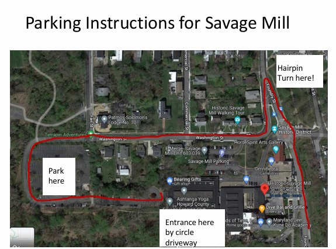

Celebrate with us on this special day!
Time: 10:30 AM - 12:30 PM
Location: Temple Solel
Join us at the celebration venue. Here's how to find it:
From Gorman road:
Stationary display of assorted cheeses and gourmet crackers, fresh garden vegetables, including broccoli, baby carrots, celery, cherry tomatoes, and cucumbers. Served with creamy ranch dip and sliced seasonal fruit.
Vanilla ice cream served with assorted candy and fruit toppings, chocolate and caramel syrup, whipped cream, and cherries.
Fresh brewed regular and decaf coffee, with hot water for assorted gourmet teas.